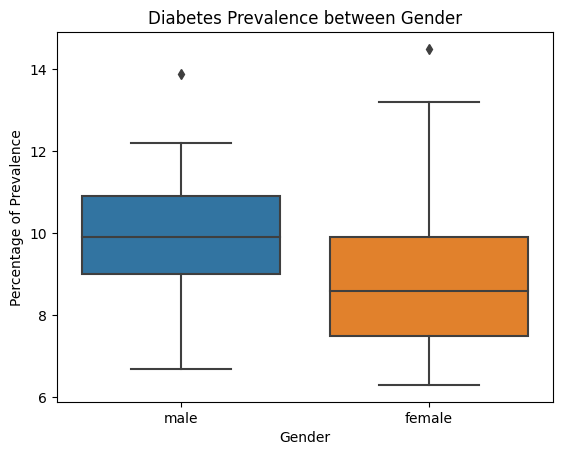

# COPY THIS
from google.colab import drive
import os
drive.mount('/content/drive', force_remount=True)
os.chdir('/content/drive/MyDrive/data102')
Mounted at /content/drive
import pandas as pd
import numpy as np
import matplotlib.pyplot as plt
import statsmodels.api as sm
import seaborn as sns
import itertools
!pip install sodapy
from sodapy import Socrata
Looking in indexes: https://pypi.org/simple, https://us-python.pkg.dev/colab-wheels/public/simple/
Requirement already satisfied: sodapy in /usr/local/lib/python3.9/dist-packages (2.2.0)
Requirement already satisfied: requests>=2.28.1 in /usr/local/lib/python3.9/dist-packages (from sodapy) (2.28.2)
Requirement already satisfied: urllib3<1.27,>=1.21.1 in /usr/local/lib/python3.9/dist-packages (from requests>=2.28.1->sodapy) (1.26.15)
Requirement already satisfied: certifi>=2017.4.17 in /usr/local/lib/python3.9/dist-packages (from requests>=2.28.1->sodapy) (2022.12.7)
Requirement already satisfied: idna<4,>=2.5 in /usr/local/lib/python3.9/dist-packages (from requests>=2.28.1->sodapy) (3.4)
Requirement already satisfied: charset-normalizer<4,>=2 in /usr/local/lib/python3.9/dist-packages (from requests>=2.28.1->sodapy) (2.0.12)
os.chdir('data/')
!wget -O "cdi.csv" "https://chronicdata.cdc.gov/api/views/g4ie-h725/rows.csv?accessType=DOWNLOAD"
--2023-04-25 04:30:26-- https://chronicdata.cdc.gov/api/views/g4ie-h725/rows.csv?accessType=DOWNLOAD
Resolving chronicdata.cdc.gov (chronicdata.cdc.gov)... 52.206.68.26, 52.206.140.205, 52.206.140.199
Connecting to chronicdata.cdc.gov (chronicdata.cdc.gov)|52.206.68.26|:443... connected.
HTTP request sent, awaiting response... 200 OK
Length: unspecified [text/csv]
Saving to: ‘cdi.csv’
cdi.csv [ <=> ] 342.67M 7.76MB/s in 45s
2023-04-25 04:31:12 (7.65 MB/s) - ‘cdi.csv’ saved [359317765]
cdi = pd.read_csv('cdi.csv')
<ipython-input-96-9cdd50d987b2>:1: DtypeWarning: Columns (10) have mixed types. Specify dtype option on import or set low_memory=False.
cdi = pd.read_csv('cdi.csv')
cdi.head()
| YearStart | YearEnd | LocationAbbr | LocationDesc | DataSource | Topic | Question | Response | DataValueUnit | DataValueType | ... | LocationID | TopicID | QuestionID | DataValueTypeID | StratificationCategoryID1 | StratificationID1 | StratificationCategoryID2 | StratificationID2 | StratificationCategoryID3 | StratificationID3 | |
|---|---|---|---|---|---|---|---|---|---|---|---|---|---|---|---|---|---|---|---|---|---|
| 0 | 2014 | 2014 | AR | Arkansas | SEDD; SID | Asthma | Hospitalizations for asthma | NaN | NaN | Number | ... | 5 | AST | AST3_1 | NMBR | GENDER | GENM | NaN | NaN | NaN | NaN |
| 1 | 2018 | 2018 | CO | Colorado | SEDD; SID | Asthma | Hospitalizations for asthma | NaN | NaN | Number | ... | 8 | AST | AST3_1 | NMBR | OVERALL | OVR | NaN | NaN | NaN | NaN |
| 2 | 2018 | 2018 | DC | District of Columbia | SEDD; SID | Asthma | Hospitalizations for asthma | NaN | NaN | Number | ... | 11 | AST | AST3_1 | NMBR | OVERALL | OVR | NaN | NaN | NaN | NaN |
| 3 | 2017 | 2017 | GA | Georgia | SEDD; SID | Asthma | Hospitalizations for asthma | NaN | NaN | Number | ... | 13 | AST | AST3_1 | NMBR | GENDER | GENF | NaN | NaN | NaN | NaN |
| 4 | 2010 | 2010 | MI | Michigan | SEDD; SID | Asthma | Hospitalizations for asthma | NaN | NaN | Number | ... | 26 | AST | AST3_1 | NMBR | RACE | HIS | NaN | NaN | NaN | NaN |
5 rows × 34 columns
cdi.columns
Index(['YearStart', 'YearEnd', 'LocationAbbr', 'LocationDesc', 'DataSource',
'Topic', 'Question', 'Response', 'DataValueUnit', 'DataValueType',
'DataValue', 'DataValueAlt', 'DataValueFootnoteSymbol',
'DatavalueFootnote', 'LowConfidenceLimit', 'HighConfidenceLimit',
'StratificationCategory1', 'Stratification1', 'StratificationCategory2',
'Stratification2', 'StratificationCategory3', 'Stratification3',
'GeoLocation', 'ResponseID', 'LocationID', 'TopicID', 'QuestionID',
'DataValueTypeID', 'StratificationCategoryID1', 'StratificationID1',
'StratificationCategoryID2', 'StratificationID2',
'StratificationCategoryID3', 'StratificationID3'],
dtype='object')
groups = cdi.groupby("Topic").max()
topics = groups.index.values.tolist()
topics
<ipython-input-99-80939149b5ec>:1: FutureWarning: Dropping invalid columns in DataFrameGroupBy.max is deprecated. In a future version, a TypeError will be raised. Before calling .max, select only columns which should be valid for the function.
groups = cdi.groupby("Topic").max()
['Alcohol',
'Arthritis',
'Asthma',
'Cancer',
'Cardiovascular Disease',
'Chronic Kidney Disease',
'Chronic Obstructive Pulmonary Disease',
'Diabetes',
'Disability',
'Immunization',
'Mental Health',
'Nutrition, Physical Activity, and Weight Status',
'Older Adults',
'Oral Health',
'Overarching Conditions',
'Reproductive Health',
'Tobacco']
nut = cdi[cdi["Topic"] == 'Nutrition, Physical Activity, and Weight Status']
nut.shape
(75418, 34)
nut = nut.reset_index()
hs_soda = nut[nut["Question"] == "Soda consumption among high school students"]
hs_soda[['YearStart', 'YearEnd', 'LocationAbbr', 'DataValueUnit', 'DataValueType',
'DataValue', 'DataValueAlt', 'LowConfidenceLimit', 'HighConfidenceLimit',
'StratificationCategory1', 'Stratification1']]
| YearStart | YearEnd | LocationAbbr | DataValueUnit | DataValueType | DataValue | DataValueAlt | LowConfidenceLimit | HighConfidenceLimit | StratificationCategory1 | Stratification1 | |
|---|---|---|---|---|---|---|---|---|---|---|---|
| 2 | 2019 | 2019 | MI | % | Crude Prevalence | 18.0 | 18.0 | 16.1 | 20.0 | Gender | Male |
| 16 | 2019 | 2019 | MS | % | Crude Prevalence | 23.1 | 23.1 | 20.1 | 26.4 | Gender | Female |
| 24 | 2013 | 2013 | TN | % | Crude Prevalence | 32.4 | 32.4 | 27.8 | 37.3 | Gender | Female |
| 25 | 2013 | 2013 | KS | % | Crude Prevalence | 18.6 | 18.6 | 13.5 | 25.1 | Race/Ethnicity | Hispanic |
| 32 | 2015 | 2015 | KY | % | Crude Prevalence | 28.6 | 28.6 | 21.0 | 37.6 | Race/Ethnicity | Black, non-Hispanic |
| ... | ... | ... | ... | ... | ... | ... | ... | ... | ... | ... | ... |
| 7514 | 2019 | 2019 | TX | % | Crude Prevalence | NaN | NaN | NaN | NaN | Race/Ethnicity | Asian, non-Hispanic |
| 7516 | 2019 | 2019 | HI | % | Crude Prevalence | 11.2 | 11.2 | 9.4 | 13.3 | Race/Ethnicity | Hispanic |
| 7517 | 2013 | 2013 | LA | % | Crude Prevalence | NaN | NaN | NaN | NaN | Race/Ethnicity | American Indian or Alaska Native |
| 7525 | 2019 | 2019 | ID | % | Crude Prevalence | NaN | NaN | NaN | NaN | Race/Ethnicity | Asian, non-Hispanic |
| 7530 | 2013 | 2013 | AL | % | Crude Prevalence | 29.4 | 29.4 | 24.5 | 34.9 | Gender | Female |
1760 rows × 11 columns
ad_ob = nut[nut["Question"] == "Obesity among adults aged >= 18 years"]
ad_ob[['YearStart', 'YearEnd', 'LocationAbbr', 'DataValueUnit', 'DataValueType',
'DataValue', 'DataValueAlt', 'LowConfidenceLimit', 'HighConfidenceLimit',
'StratificationCategory1', 'Stratification1']]
| YearStart | YearEnd | LocationAbbr | DataValueUnit | DataValueType | DataValue | DataValueAlt | LowConfidenceLimit | HighConfidenceLimit | StratificationCategory1 | Stratification1 | |
|---|---|---|---|---|---|---|---|---|---|---|---|
| 17904 | 2017 | 2017 | AK | % | Age-adjusted Prevalence | 33.8 | 33.8 | 30.1 | 37.8 | Gender | Male |
| 17907 | 2021 | 2021 | AK | % | Age-adjusted Prevalence | 34.9 | 34.9 | 31.9 | 38.0 | Gender | Female |
| 17915 | 2016 | 2016 | AK | % | Age-adjusted Prevalence | NaN | NaN | NaN | NaN | Race/Ethnicity | Black, non-Hispanic |
| 17920 | 2015 | 2015 | AK | % | Crude Prevalence | 29.1 | 29.1 | 20.4 | 39.7 | Race/Ethnicity | Multiracial, non-Hispanic |
| 17928 | 2013 | 2013 | AK | % | Crude Prevalence | 23.2 | 23.2 | 16.6 | 31.5 | Race/Ethnicity | Multiracial, non-Hispanic |
| ... | ... | ... | ... | ... | ... | ... | ... | ... | ... | ... | ... |
| 75391 | 2020 | 2020 | WY | % | Age-adjusted Prevalence | 31.0 | 31.0 | 19.5 | 45.5 | Race/Ethnicity | Other, non-Hispanic |
| 75394 | 2020 | 2020 | WY | % | Age-adjusted Prevalence | 30.0 | 30.0 | 27.2 | 32.8 | Gender | Male |
| 75395 | 2020 | 2020 | WY | % | Crude Prevalence | 31.4 | 31.4 | 28.6 | 34.3 | Gender | Female |
| 75410 | 2020 | 2020 | WY | % | Age-adjusted Prevalence | 30.0 | 30.0 | 27.8 | 32.3 | Race/Ethnicity | White, non-Hispanic |
| 75417 | 2020 | 2020 | WY | % | Age-adjusted Prevalence | 35.5 | 35.5 | 28.0 | 43.8 | Race/Ethnicity | Hispanic |
9570 rows × 11 columns
CDI possible questions:
Compare soda consumption across years, how does it correlate to diabetes?
Compare soda consumption between states
GLM?
client = Socrata("data.cdc.gov", None)
results = client.get("fcqm-xrf4", where = "year = '2014'", limit = 100000)
pm_2014 = pd.DataFrame.from_records(results)
pm_2014
client = Socrata("data.cdc.gov", None)
results = client.get("372p-dx3h", where = "`year` = '2014'", limit = 100000)
ozone = pd.DataFrame.from_records(results)
ozone
Does higher pm cause a lower o3?
* Causal Inference?
# COPY THIS
from google.colab import drive
import os
drive.mount('/content/drive', force_remount=True)
os.chdir('/content/drive/MyDrive/data102')
Mounted at /content/drive
folder = "data/categorical_diabetes/"
os.listdir(folder)
['diabetes_male.csv',
'diabetes_female.csv',
'diabetes_18_44.csv',
'diabetes_45_64.csv',
'diabetes_65_74.csv',
'diabetes_75+.csv',
'diabetes aggregation']
data = None
for fname in os.listdir(folder):
if '.csv' in fname:
data_name = '-'.join(fname.split('.')[0].split('_')[1:])
df = pd.read_csv(folder+fname, header=2, index_col=0)
df = df.iloc[1:, 0:1].rename(columns={'Percentage': data_name})
if data is None: data = df
else: data = data.join(df)
data.head()
| male | female | 18-44 | 45-64 | 65-74 | 75+ | |
|---|---|---|---|---|---|---|
| State | ||||||
| Alabama | 12.0 | 11.5 | 4.8 | 17.8 | 24.3 | 21.0 |
| Alaska | 6.7 | 8.6 | 1.8 | 10.3 | 21.3 | 21.0 |
| Arizona | 10.1 | 8.3 | 2.8 | 14.0 | 21.8 | 18.7 |
| Arkansas | 11.9 | 11.3 | 3.9 | 17.9 | 24.7 | 22.8 |
| California | 10.9 | 9.0 | 2.9 | 15.4 | 21.5 | 22.5 |
diabetes = data[["male", "female"]]
#no data rows + drop guam, puerto rico - only 50 states
diabetes = diabetes.iloc[:-2]
# convert to float
diabetes = diabetes.astype({'male':'float','female':'float'})
diabetes
| male | female | |
|---|---|---|
| State | ||
| Alabama | 12.0 | 11.5 |
| Alaska | 6.7 | 8.6 |
| Arizona | 10.1 | 8.3 |
| Arkansas | 11.9 | 11.3 |
| California | 10.9 | 9.0 |
| Colorado | 7.4 | 6.5 |
| Connecticut | 8.5 | 7.7 |
| Delaware | 10.5 | 9.2 |
| District of Columbia | 9.1 | 9.4 |
| Florida | 9.2 | 9.7 |
| Georgia | 11.5 | 10.6 |
| Hawaii | 9.6 | 8.2 |
| Idaho | 7.3 | 6.9 |
| Illinois | 10.3 | 8.6 |
| Indiana | 10.6 | 9.2 |
| Iowa | 9.3 | 7.6 |
| Kansas | 9.8 | 9.3 |
| Kentucky | 11.4 | 11.3 |
| Louisiana | 11.1 | 9.8 |
| Maine | 8.6 | 7.1 |
| Maryland | 9.9 | 8.6 |
| Massachusetts | 10.7 | 7.1 |
| Michigan | 10.0 | 8.2 |
| Minnesota | 8.4 | 6.6 |
| Mississippi | 11.8 | 12.0 |
| Missouri | 10.7 | 9.6 |
| Montana | 8.0 | 7.4 |
| Nebraska | 9.2 | 7.7 |
| Nevada | 9.6 | 8.3 |
| New Hampshire | 8.4 | 7.5 |
| New Jersey | 9.5 | 8.0 |
| New Mexico | 11.1 | 9.9 |
| New York | 10.1 | 8.4 |
| North Carolina | 10.1 | 9.7 |
| North Dakota | 9.0 | 7.0 |
| Ohio | 10.9 | 9.9 |
| Oklahoma | 11.6 | 10.4 |
| Oregon | 8.0 | 8.0 |
| Pennsylvania | 10.6 | 8.8 |
| Rhode Island | 9.6 | 7.2 |
| South Carolina | 11.1 | 10.5 |
| South Dakota | 9.0 | 7.6 |
| Tennessee | 12.2 | 11.4 |
| Texas | 11.7 | 10.0 |
| Utah | 8.5 | 7.0 |
| Vermont | 7.8 | 6.3 |
| Virginia | 9.2 | 8.8 |
| Washington | 9.1 | 7.4 |
| West Virginia | 12.2 | 11.9 |
| Wisconsin | 8.5 | 7.5 |
| Wyoming | 8.8 | 6.7 |
| Guam | 10.0 | 13.2 |
| Puerto Rico | 13.9 | 14.5 |
sns.boxplot(x="variable", y="value", data=pd.melt(diabetes))
plt.title("Diabetes Prevalence between Gender")
plt.xlabel("Gender")
plt.ylabel("Percentage of Prevalence");
